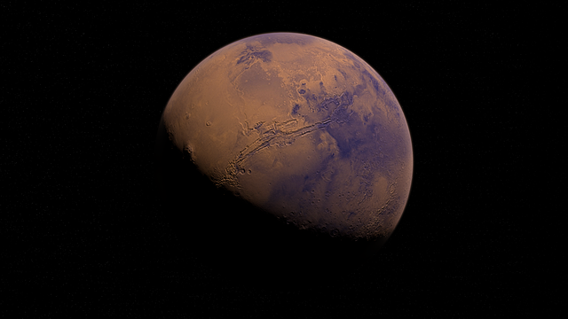
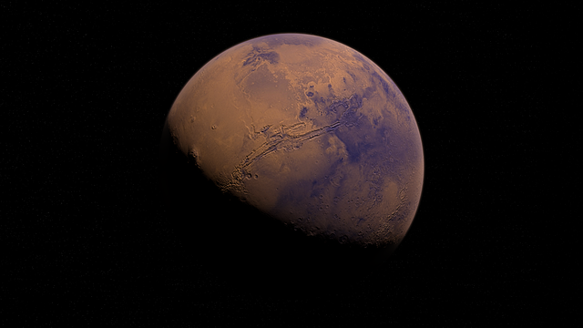

{{ flight.dateOfFlight | date : "dd-mm-y" }}

{{ flight.dateOfFlight | date : "hh:mm" }}
Miejsce Startu:
{{ flight.startingPlace }}Miejsce Lądowania:
{{ flight.landingPlace }}
{{ flight.availabilityOfPlaces }}
 } @case ("mars") {

} @case ("jowisz") {
} @case ("mars") {

} @case ("jowisz") {
 } @default {
} @default {
 } }
} }